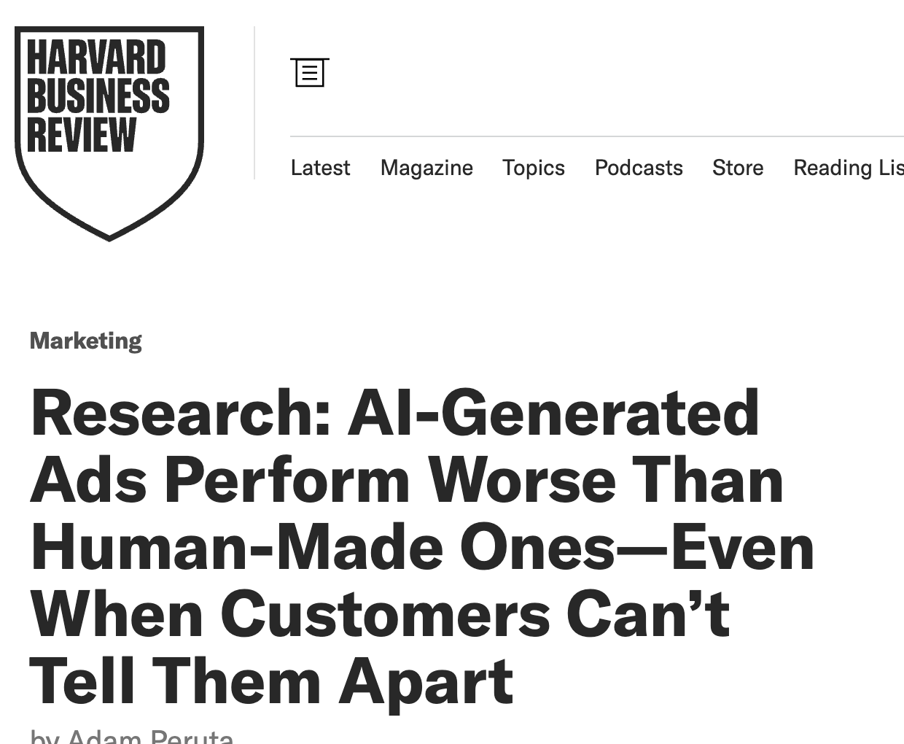

<!doctype html>
<!-- 04-taste: "But the problem is AI content performs terribly without someone with taste.": the HBR
     research headline opens above the head, then the study's numbers count down beside it (-14% sales,
     -17% brand equity) and a blinking "missing: taste" lands. -->
<html lang="en">
<head>
  <meta charset="UTF-8" />
  <meta name="viewport" content="width=1080, height=1920" />
  <title>04-taste</title>
  <link rel="stylesheet" href="retro.css" />
  <script src="gsap.min.js"></script>
  <script src="retro.js"></script>
  <style>
    .shot .win__body { padding: 0; }
    .shot img { display: block; width: 100%; }
    #ST .win__body { display: flex; flex-direction: column; gap: calc(var(--u) * 1.4); padding: calc(var(--u) * 1.6); }
    .st .disp { display: block; font-size: calc(var(--u) * 8); }
    .st .micro { display: block; margin-top: calc(var(--u) * .6); text-transform: none; }
    #taste { white-space: normal; font-size: calc(var(--u) * 3.6); line-height: 1.05; }
  </style>
</head>
<body data-world="coral">
  <div id="root" data-composition-id="root" data-width="1080" data-height="1920">
    <div class="clip" id="stage" data-start="0" data-duration="5"></div>
  </div>
  <script>
    R.START = R.w('But the problem', 0);
    const END = 19.26, W = p => R.w(p, R.START - 0.1);

    // the headline (layer: hbr)
    const H = R.win({ title: 'hbr.org', right: 'Sep 3, 2026', variant: 'paper', x: 9, y: 22, w: 52, h: 'auto', layer: 'hbr',
      body: `` });
    H.classList.add('shot');
    R.open(H, W('problem'), { from: { x: 50, y: 80 } });

    // the study's numbers (layer: stats)
    const ST = R.win({ title: 'Study.dat', right: 'n=3,000', variant: 'world', x: 59, y: 24, w: 32, h: 'auto', layer: 'stats',
      body: `<div class="st"><span class="disp" id="s1">0%</span><span class="micro">short-term sales vs human-made ads</span></div>
        <div class="st"><span class="disp" id="s2">0%</span><span class="micro">long-term brand equity</span></div>
        <span class="chip-inv h" id="taste">missing:<br>someone with taste<span id="cur">█</span></span>` });
    ST.id = 'ST';
    R.open(ST, W('performs'), { from: { x: 40, y: 50 } });
    const pct = v => Math.round(v) + '%';
    R.count(R.$('#s1'), W('terribly'), 0.45, 0, -14, pct); R.sfx('error', W('terribly') + 0.45, { vol: -6, layer: 'stats' });
    R.count(R.$('#s2'), W('without'), 0.45, 0, -17, pct); R.sfx('shrink', W('without') + 0.45, { vol: -8, layer: 'stats' });
    R.show(R.$('#taste'), W('taste.')); R.sfx('bell', W('taste.'), { vol: -8, layer: 'stats' });
    R.blink(R.$("#cur"), W("taste.") + 0.3, END, 0.5);
    R.done(END);
  </script>
</body>
</html>
